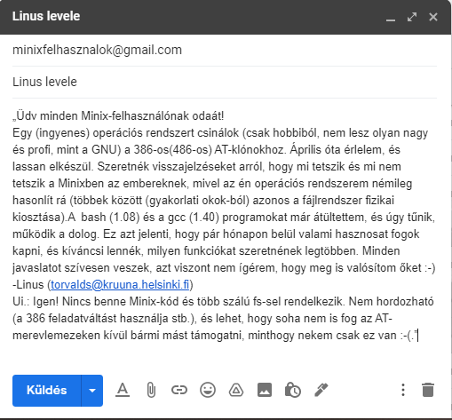
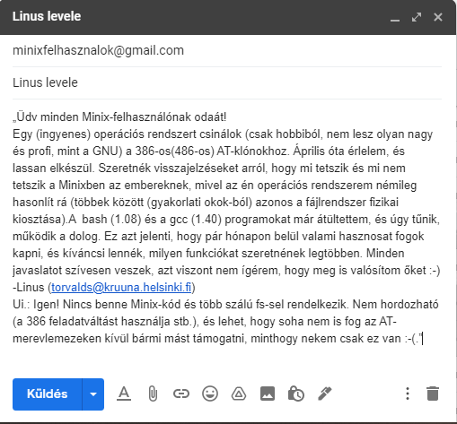

Linus Torvalds
Linus Torvalds, Finnországban született 1969-ben. Linus Torvalds az Unix-szerű operációs rendszer, a Linux fejlesztésének elindítója, jelenleg is egyik fő szerkesztője. Saját operációs rendszert szeretett volna írni. A 21 éves egyetemista az Intel80386-os processzor védett módú, feladat-váltó lehetőségeit szerette volna felfedezni. Ez körülbelül 1991 nyarának elején lehetett. Linus Torvalds kifejlesztett egy jól használható, nyílt forrású kernelt, vagyis rendszermagot és erre telepítette a GNU C fejlesztőrendszert. A program fejlesztése a Tanenbaum-féle Minix alatt történt ,eleinte Assembly nyelven.
Linux fejlődése
Linus egy rendszermagot készített, Richard pedig egy héjat, ami a rendszermag kiegészítője, amit ő GNU-nak nevezett. Linus a kettőből hozta létre a Linuxot. Korai stádiumban 1991-ben felkapta az internet, ezért sokan csatlakoztak a fejlesztéséhez. A Linux kernel és a köré épített GNU alkalmazások együtt a GNU/Linuxot alkotják. A program rohamosan fejlődött, 1944 előtt Linus nem engedte egyik új változatot sem 1.0-nak hívni, mert úgy látta, hogy még nem teljesítik az UNIX szabvány elvárásait. 1994-ben jött ki az 1.0.0-ás verzió, és ettől kezdve minden verziót 3 szám jelöl. Az első a nagyobb fejlesztéseket takarja, a második, ha páros, akkor stabil, ha páratlan, akkor fejlesztés alatt álló rendszert jelöl, a harmadik az apróbb változásokat jelenti. Így elérték, hogy mindenki a neki megfelelő verzióhoz jusson: aki használni akarta, az páros, aki fejleszteni, az páratlan középső számút töltött le.
 
